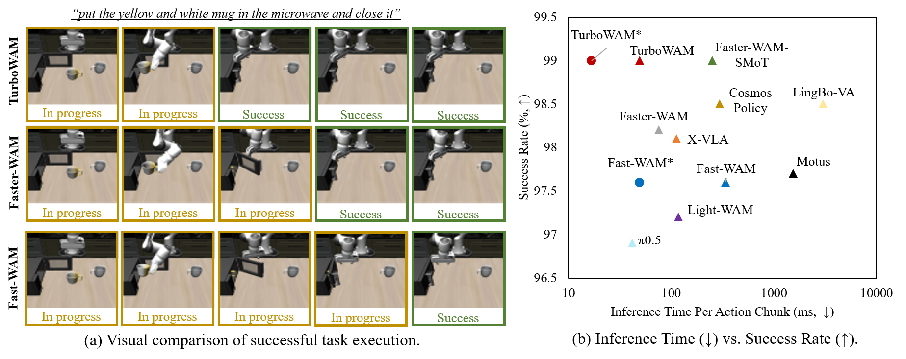
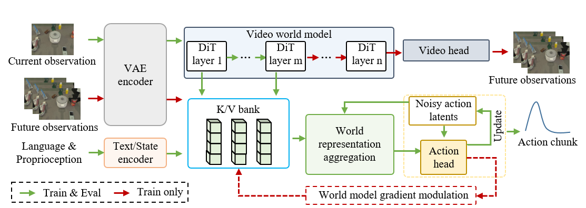
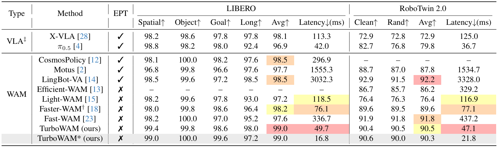
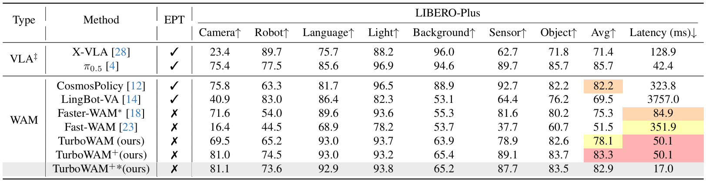
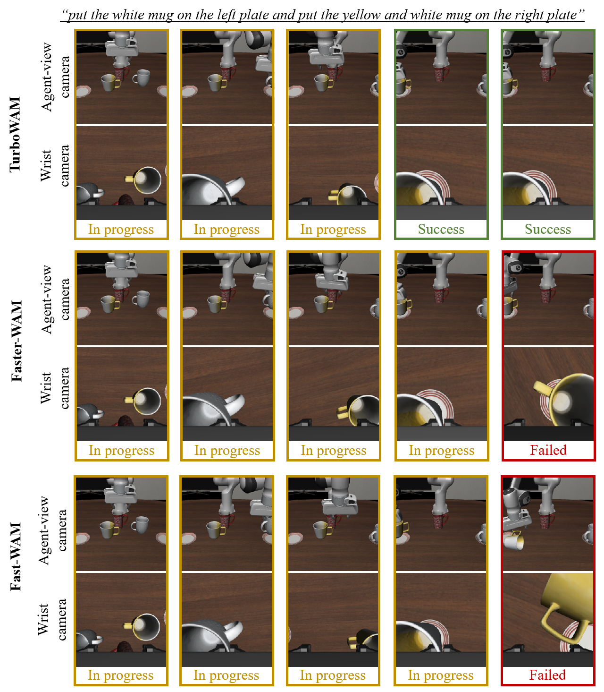
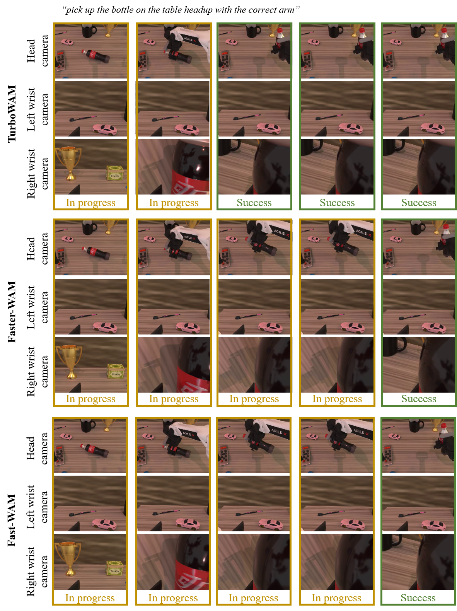

Figure 1. Overview of TurboWAM performance. (a) Visual comparison of successful task execution, highlighting the fast task completion of TurboWAM. (b) Comparison of inference time vs. success rate on LIBERO. TurboWAM achieves a better trade-off between inference time and success rate compared to state-of-the-art methods. TurboWAM* and Fast-WAM* denote the compiled versions. TurboWAM/TurboWAM* achieves 6.8×/2.9× speedup compared to Fast-WAM/Fast-WAM*, respectively.

Figure 2. Overview of the TurboWAM framework. The world representation aggregation mechanism operates within a bounded range of relevant world model layers, estimating aggregation weights based on the current action denoising state and combining them with learnable layer-wise weights. The world model gradient modulation mechanism decomposes and modulates action-supervision gradients across world model layers during the backward pass. Together, these complementary designs improve world representation learning and reduce inference latency while maintaining competitive task success rates.

Table 1. Quantitative comparison with state-of-the-art methods on LIBERO and RoboTwin 2.0.

Table 2. Quantitative comparison with state-of-the-art methods on LIBERO-Plus.

Figure 3. Qualitative comparisons of task execution. Each row illustrates the progression of task execution from left to right.

Figure 4. Qualitative comparisons of task execution. Each row illustrates the progression of task execution from left to right.
If you find this work useful, please cite our paper: